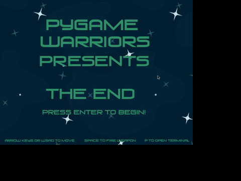
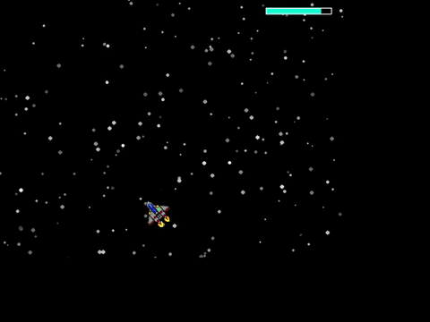
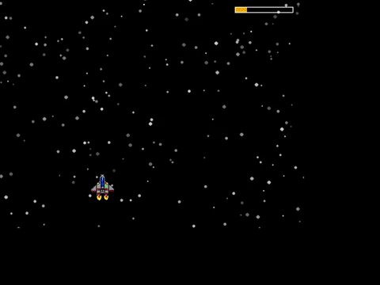

This project as my first ever game jam. In case you're not familiar with the concept of a game jam
its actually quite simple. You get 2 days (48 hours) to create a game based on a theme given to you
right at the very start. As long as you're able to tie your game into the theme somehow really you
have unlimited freedom. You're able to work by yourself or with a group of people. For this game jam
in particular I had only about a semester or so of school under my belt and because of this I didnt
to work alone. I found two other freshmen with equal experience and formed my group. Seeing as though
we only had experience with working in python using the PyGame library we saw it fit to dub ourselves
the "PyGame Warriors". The theme that got revealed to us for the jam was "The End". We didnt really
know where to start, only that we had just 48 hours to make something that resembled a game.
My approach
To start off, we knew we didnt want to just jump right in and start programming something random.
We took a step back and started with a whiteboard approach, just spitballing random ideas and
writing down the ones we though had potential. After a bit, we landed on our idea. We thought of
making our game be just "The End" of some other random imaginary game. Essentially just being the
last level/boss fight of that game. That way it left unlimited room for creativiy as well as fitting
the theme very well. After that all we need was draw out some of the details, mechanics and what
the player would actually be doing.
The short synposis of what we landed on went a little something like this: The player would start into
the level during and "add phase" (i.e. smaller swarms of enemies) and after that they would transition
into the boss phase. If the boss was not killed then the cycle would repeat. However, the trick was the
player would not be able to kill the boss unless they succesfuly deciphered a code that was collected during
the add phase. Periodicly the enemies, when killed, would shoot out a letter. If the player kept track of these
letters and put them into the correct order typing them into the player terminal then it would unlock
the needed powerup to kill the boss. The code when deciphered was "The End" as was fitting for the situation.
After this, me and my two group mates hit the ground hard. We all divided up tasks so that everyone would be
able to work non-stop while also not stepping on each other's toes while pushing into out github repo.
I was essentially the main general game programmer, I was responsible for a large majority of the mechanics.
To list a few as an example, I worked on the add phase, boss phase (and how those two phases switched back and
forth), the code that would come from the enemies, the enemies (including the boss's) and players attacks.
I tackled each one at a time since we were under such strict time constraints. I didnt want to put myself in
a position where I had bit off too much at the same time and then when the deadline came around I had a lot
of things 80% finished but nothing quite all the way finished.


The first gif above shows the player fighting the boss without having the needed powerup from the correct code.
And the second one shows how much stronger the player gets after the correct code is entered appropriately.
Challenges Faced and Things Learned
This project was surprisingly fruitful when it comes to the things things that I came away from it knowing.
One of the most important was the challenge of scope. Scope is such a huge killer for a lot of things, and
not even always games. Scope in any kind of project can be a huge killer. Bitting off more than an indiviual,
or group, can handle has very negative effects to the overall project. It will either push the expected deadline
back further and desired or result in a half finsihed product. My group and I did a reletively good job of trying
to keep the scope of our game within reason, because we knew that we wouldnt be able to push the deadline back
since it was set in stone. It would have just resulted in us having an unfinished product. But thanks to our
forsight we were able to come out with a relatively finished game. However, that doesnt mean we didnt have to cut several
features due to time.
The second greatest challenge I faced was the dauntingly short deadline. The pressure of having all these
different systems that needed to be done within such a short amount of time was quite high. Having still been
a freshmen with little experience in these situations as well as little experience in how I would perform
in such a high stress low time situation. However, thankfuly all that combined happen to be one of the biggest
things I learned from this experience. I came out realized that I could take pride in and be confident in my
own abilities. I did not fold under the pressure nor did I ever experience any thoughts of wanting to quit because
I didnt think I could do it. In fact, the whole experience was very auxilerating; with the deadline creaping
in and not being 100% confident in the wheather or not it would get finsihed. It made me much more confident in
my own abilities as well as solidifying for me early on that I truly enjoyed what wanted to do as my career, which
whem you boil it down is really just to program.
How to check out the project?
The project with all the source code is up on my GitHub for you to download if you'd like to check it out!